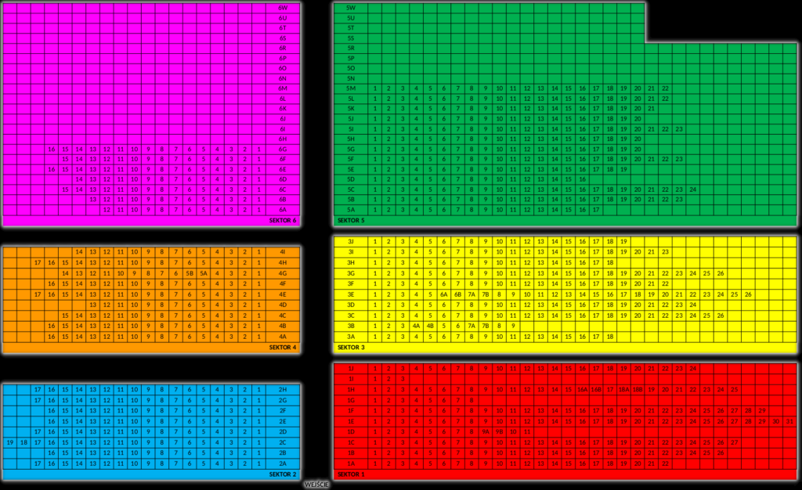

Cmentarze
Jaszkotle
Obowiązujące opłaty:
– Grób ziemny pojedynczy: 400,00 zł za 20 lat
– Grób ziemny podwójny: 800,00 zł za 20 lat
– Grób murowany pojedynczy: 1000,00 zł za 50 lat
– Grób murowany podwójny: 1000,00 zł za 50 lat
Opłaty można uiszczać osobiście lub przelewem na dedykowane sub-konto: 76 9574 0005 2001 0039 0983 0102

Regulamin-cmentarza-parafilanego-w-Jaszkotlu-01.02.21